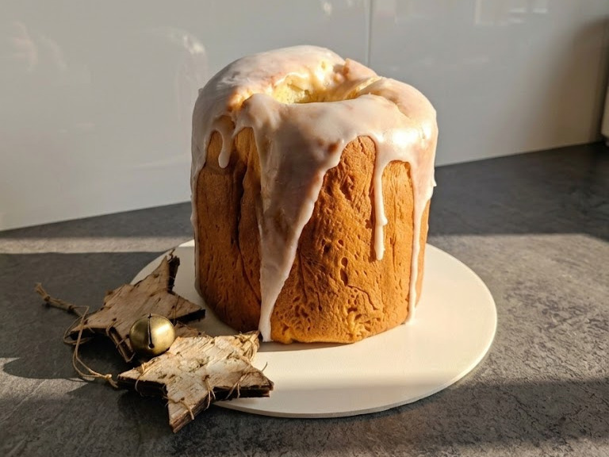
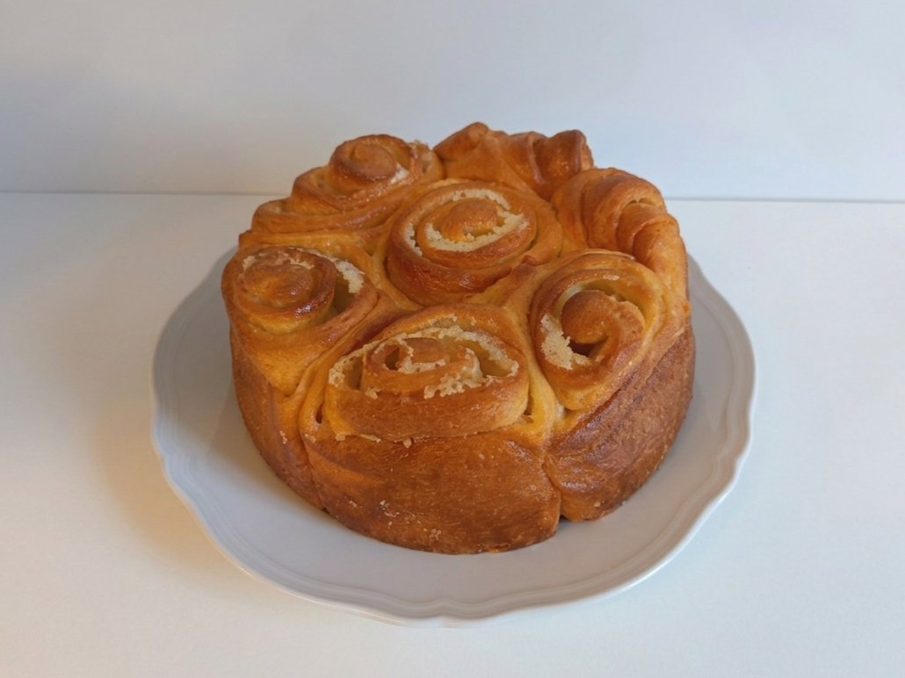
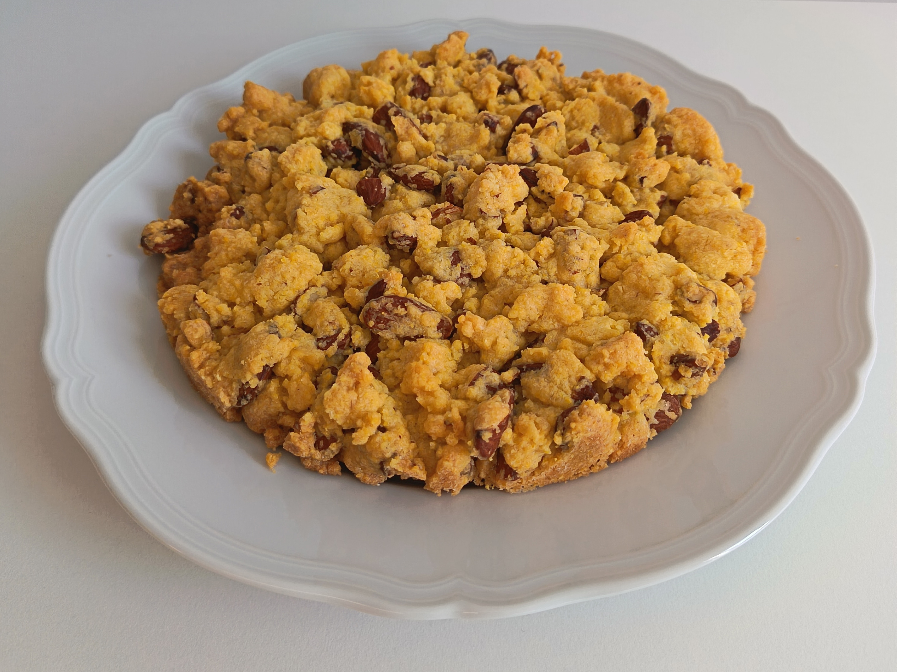
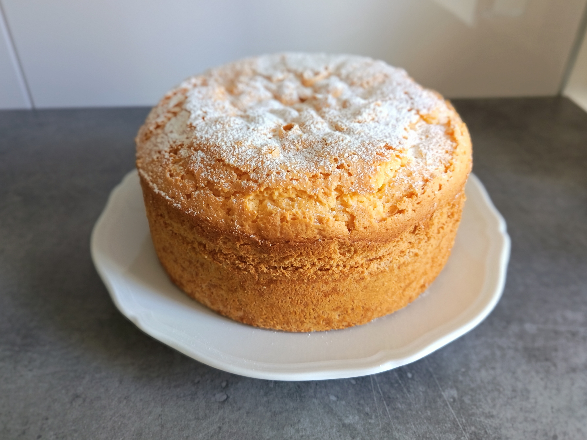
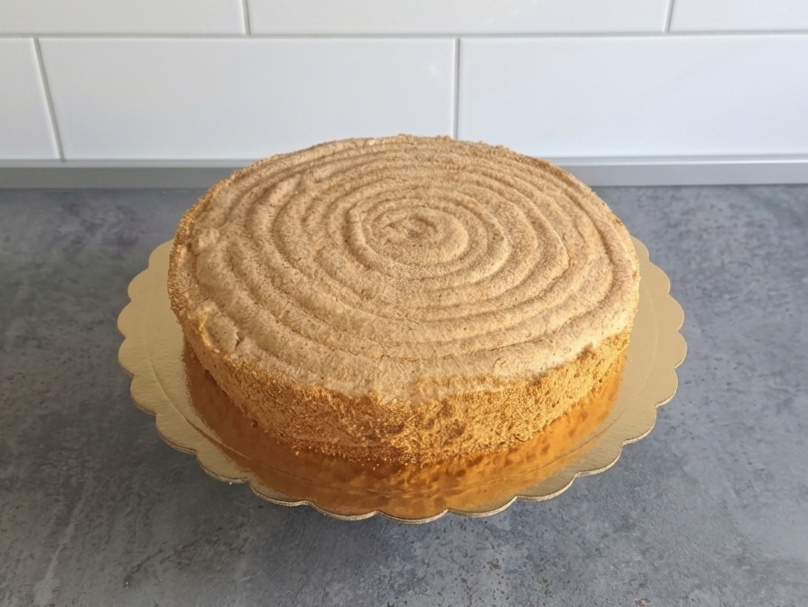
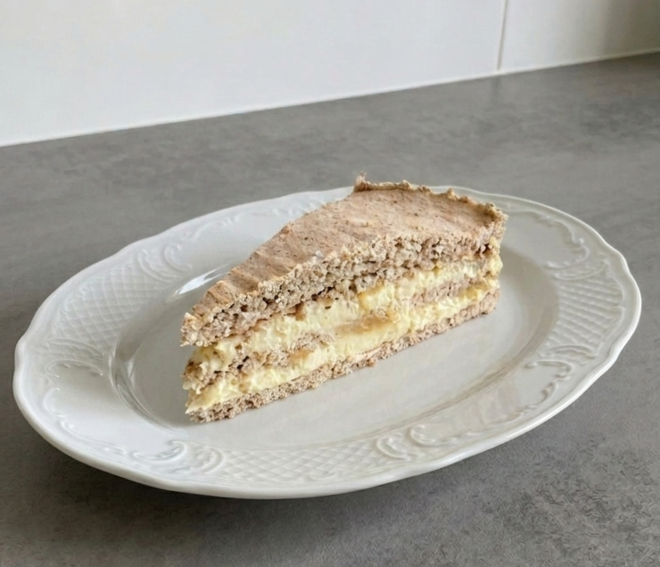

Il dolce natalizio dei mantovani. Ha il grosso inconveniente di creare dipendenza.
Leggi la storia →
Lievitato soffice in forma di bouquet — dal Rinascimento alla tua tavola.
Leggi la storia →
Croccante, decisa, da spezzare con le mani. Non provare col coltello.
Leggi la storia →Il dolce beneaugurale di Sant'Antonio. Si inzuppava nel Lambrusco. O nel caffelatte.
Leggi la storia →
Non mette tutti d'accordo. Ma se ben fatta, dà un piacere imbattibile.
Leggi la storia →Un dolce tipico di Prato. Il nome è mantovano. La storia è un mistero.
Leggi la storia →
Classica, decisa, buona.
Leggi la storia →Il dolce natalizio dei mantovani: impasto soffice e leggero, con una farcitura generosa di nocciole, mandorle e castagne — perché su quello non si lesina. La versione classica ha la glassa di zucchero, ma su richiesta è disponibile anche con glassatura al cioccolato. Ha il grosso inconveniente di creare dipendenza.
Nonostante il nome, non ha niente a che fare con la città di Monaco né con i monaci. È stato creato da un cuoco svizzero in attività a Mantova, che si ispirò al tradizionale Kugelhupf della sua terra — e Mantova lo ha adottato come proprio dolce delle feste.
Ordina su WhatsApp →Un dolce lievitato soffice e profumatissimo, perfetto per i tuoi momenti speciali. L'impasto avvolto su se stesso crea la forma di un bouquet in fiore — da qui il nome, e da qui la difficoltà di fermarsi a una fetta sola.
Nata nel Rinascimento alla corte dei Gonzaga, in occasione delle nozze tra Francesco II ed Isabella d'Este. Il cuoco volle omaggiare la bellezza della sposa con un dolce dalla forma floreale. Fu talmente apprezzato da diventare presenza fissa ai banchetti — e da lì, nel tempo, simbolo della città.
Ordina su WhatsApp →Dal gusto autentico, croccante e deciso come piace a noi. Non provare a tagliarla col coltello — si spezza con le mani, si condivide a pezzi, e così è che deve essere. Ideale per il fine pasto accompagnata da vini passiti o, per i più temerari, da un'ottima grappa.
Nasce come dolce povero della campagna mantovana — un ricostituente a base di ingredienti semplici per ritemprare le energie dei contadini dopo il lavoro nei campi. Con il tempo è stata raffinata e impreziosita dalle mandorle, grazie anche al palato esigente di Eleonora Gonzaga e alla mano sapiente del cuoco Bartolomeo Stefani.
Ordina su WhatsApp →Per gli amanti della semplicità. Era il dolce tipico delle famiglie che dovevano fare festa con quello che c'era — e per lungo tempo è stato il dolce tradizionale di Natale, servito accompagnato dal Sugolo. Data la sua consistenza compatta, si soleva inzupparlo nel Lambrusco. Ma vi dirò che anche nel caffelatte è interessante.
Con il tempo è diventato la preparazione beneaugurale del giorno di Sant'Antonio Abate — per gli amici "Sant'Antoni Chisulèr". Un antico detto avverte: senza questo dolce si rischia che il solaio vi cada in testa. Io vi ho avvertiti, poi fate voi.
Ordina su WhatsApp →Non è un dolce che mette tutti d'accordo. Ma se ben fatta, dà a chi l'apprezza un piacere che altre preparazioni non sono in grado di eguagliare: un'impalpabile tripudio di burro con una crosticina che crea un contrasto sensoriale imbattibile.
Le sue origini non sono mantovane ma pavesi. Qui siamo inclusivi e vogliamo bene a tutti.
Ordina su WhatsApp →Un dolce soffice, impreziosito dalle mandorle in superficie, molto apprezzato a diverse latitudini. La versione di Dragonfly non delude — né i mantovani doc né i forestieri di passaggio.
La Torta Mantovana è uno scherzo del destino: è tipica della città di Prato, nonostante il nome. Si dice che a darle il nome siano state due donne di origini mantovane — in alcune versioni due religiose in pellegrinaggio che lasciarono la ricetta per ringraziare dell'ospitalità, in altre cuoche di corte provenienti da Mantova e in servizio a Prato. Il mistero rimane. Intanto, girando per il centro di Mantova, la si trova in diverse pasticcerie storiche — e chi siamo noi per non farla?
Ordina su WhatsApp →
Dacquoise alle mandorle, crema al burro, zabaione. Cinque strati. Una botta de vita.
Nata a Mantova alla fine del Settecento dalle mani dei pasticcieri svizzeri Putscher, porta con sé i sapori della terra d'origine — e li sposa con lo zabaione, le cui origini sono contese come per tutte le cose buone, ma che i mantovani rivendicano come proprio. A voler essere sgordi, ci si può mettere anche il cioccolato fondente.
Ordina su WhatsApp →Tutto su ordinazione, tutto fresco. Contattami per disponibilità e tempi di preparazione.